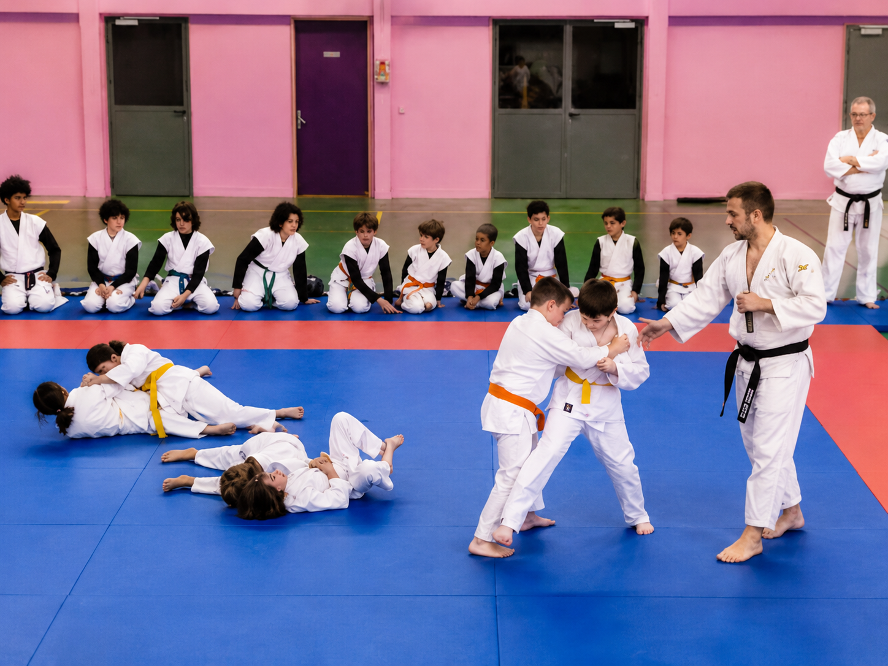
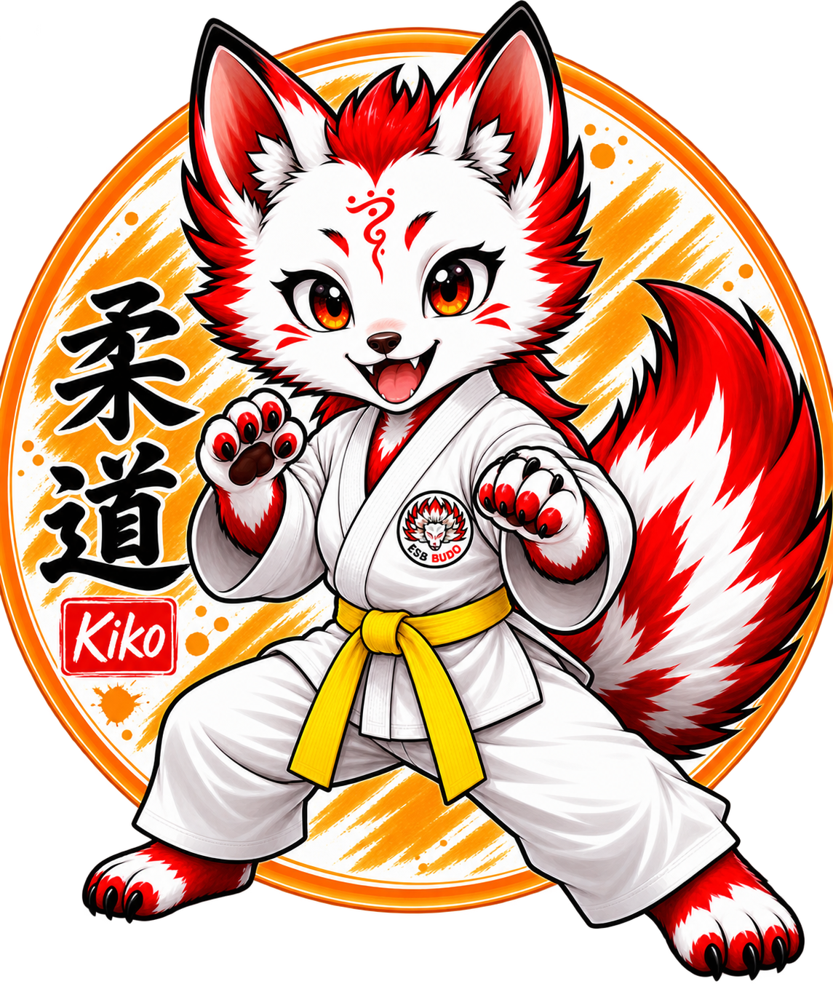
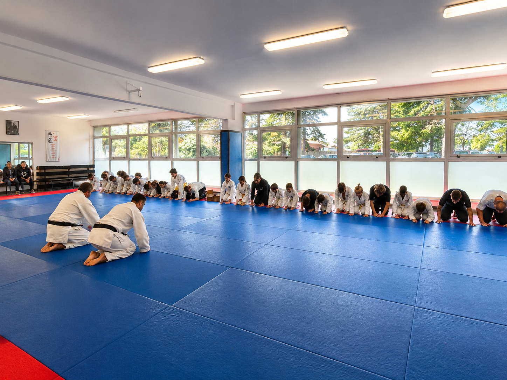
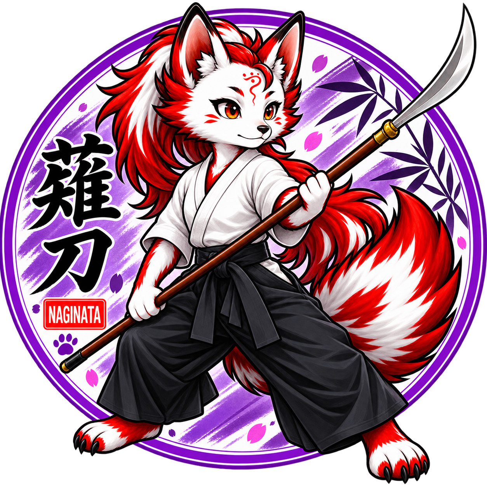
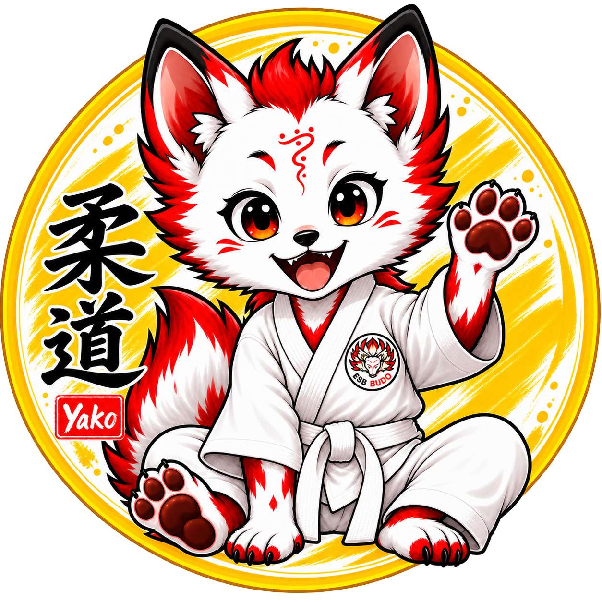
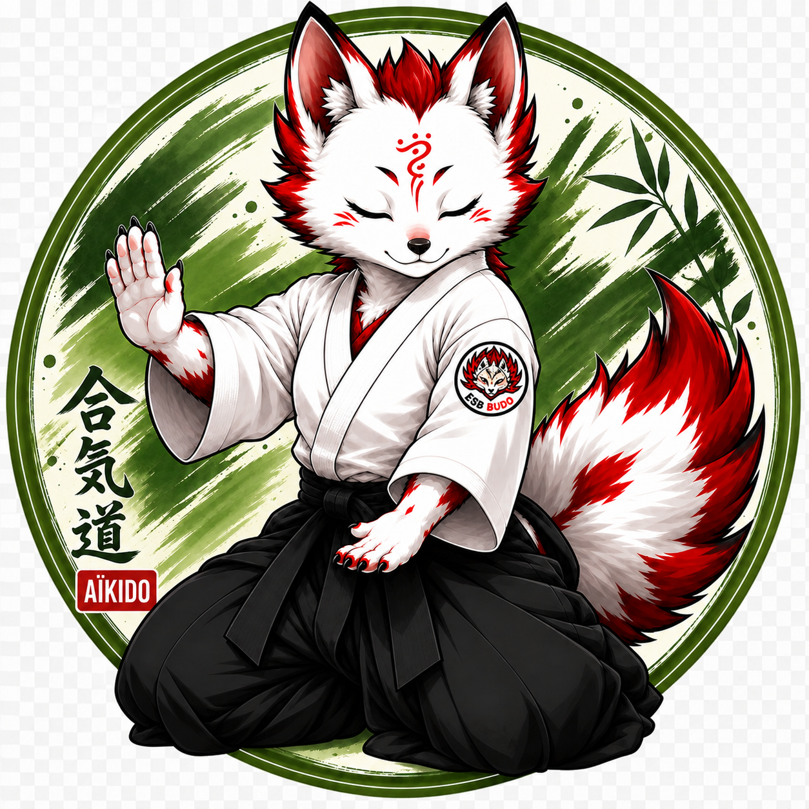

01
ÉNERGIE · PROGRESSION
Judo
Apprendre à tomber, se relever, progresser et grandir ensemble sur le tatami.
Enfants · Ados · Adultes Découvrir le Judo →

Blanquefort · Gironde
Judo, Aïkido, Chanbara et Naginata : découvrez les arts martiaux japonais au sein d'un club ouvert aux enfants, adolescents et adultes.
De la découverte à la pratique régulière, trouvez l'art martial qui vous correspond.

Apprendre à tomber, se relever, progresser et grandir ensemble sur le tatami.
Enfants · Ados · Adultes Découvrir le Judo →

Une pratique fondée sur le mouvement, le placement et la relation avec le partenaire.
Ados · Adultes Découvrir l'Aïkido →

Un art martial dynamique où l'on apprend le combat avec différentes armes souples.
Enfants · Ados · Adultes Découvrir le Chanbara →

Découvrez le maniement de cette arme traditionnelle japonaise et une pratique aussi élégante que martiale.
Ados · Adultes Découvrir le Naginata →
ESB BUDO
À Blanquefort, ESB BUDO rassemble plusieurs arts martiaux japonais dans un même esprit : apprendre, progresser, partager et transmettre.
Débutant ou pratiquant confirmé, enfant ou adulte, chacun peut trouver sa place sur le tatami.
Nos pratiques
Quatre disciplines, quatre univers, une même passion pour les arts martiaux.

柔道
Grandir, apprendre à tomber, se relever et progresser avec les autres.
Découvrir le Judo →

合気道
Mobilité, équilibre et harmonie : transformer l'opposition sans la subir.
Découvrir l'Aïkido →
スポーツチャンバラ
Rapide, ludique et dynamique : le combat aux armes souples accessible à tous.
Découvrir le Chanbara →
なぎなた
Distance, précision et maîtrise d'une arme emblématique des arts martiaux japonais.
Découvrir le Naginata →Nous rejoindre
Venez découvrir nos disciplines au Dojo du Port du Roy à Blanquefort.
Dojo du Port du Roy
55 avenue du Port du Roy
33290 Blanquefort
Enfants, adolescents et adultes, débutants comme pratiquants confirmés.
Plusieurs séances d'essai permettent de découvrir la discipline avant de s'engager.
Saison 2026 — 2027
Retrouvez les informations nécessaires pour les essais, les horaires et votre inscription à l'ESB BUDO.